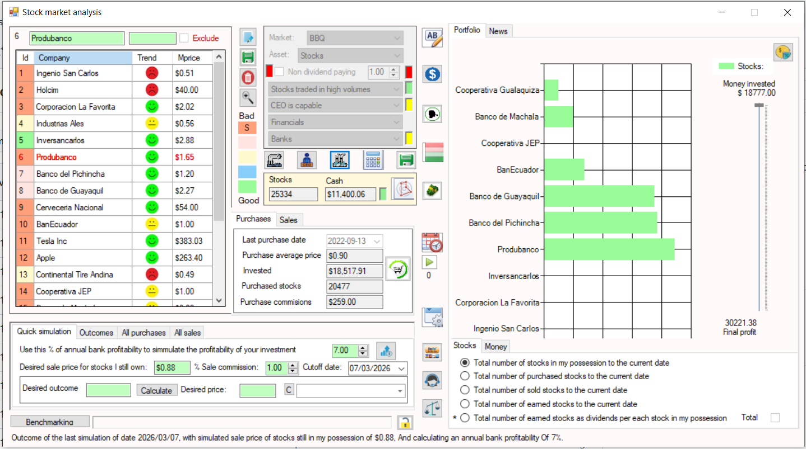
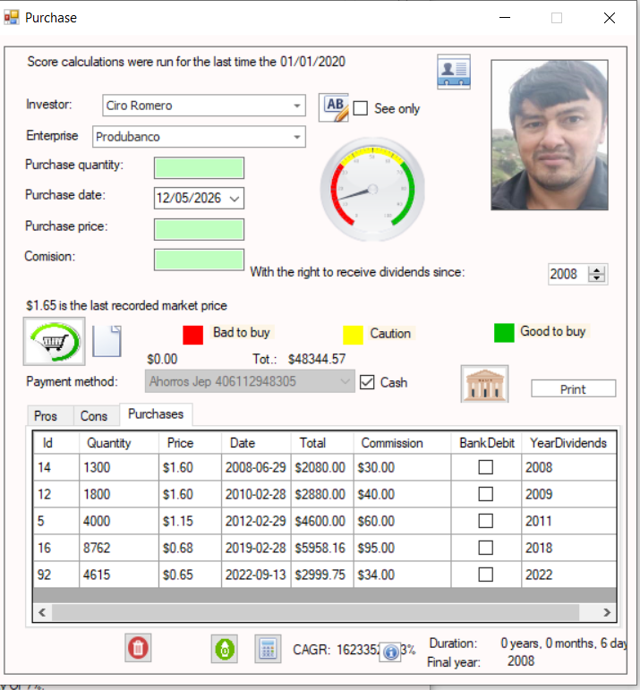
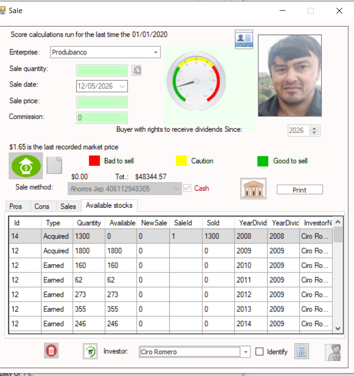
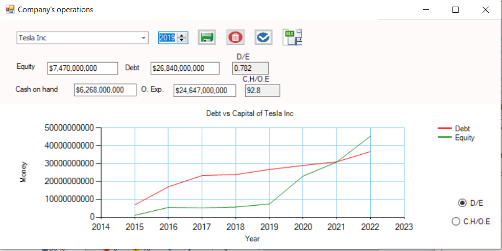
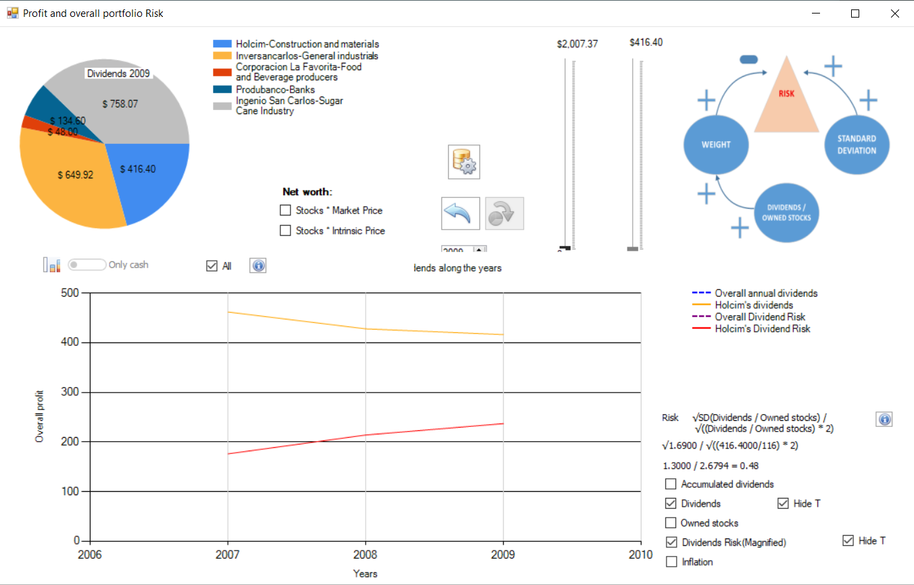
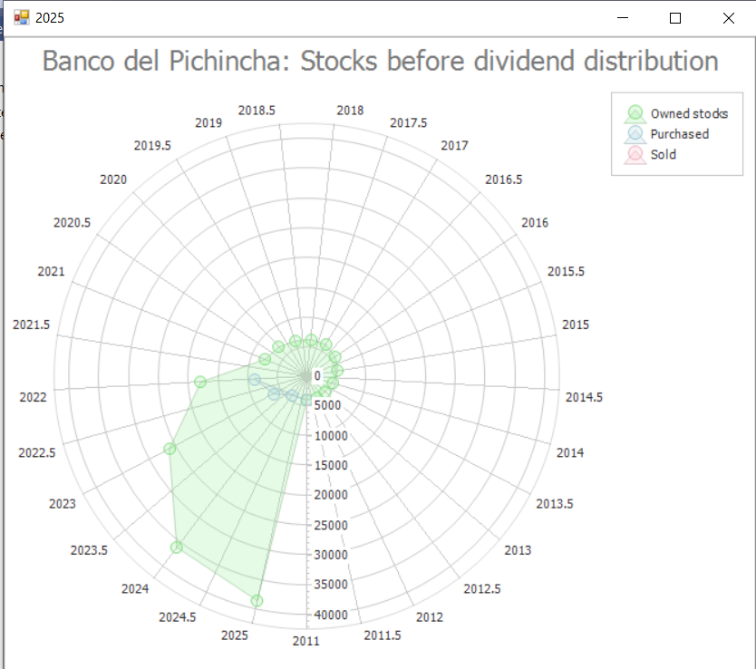
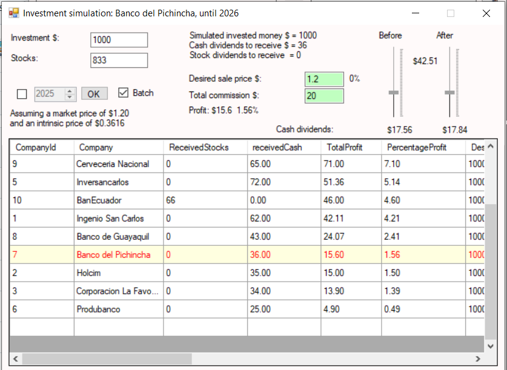
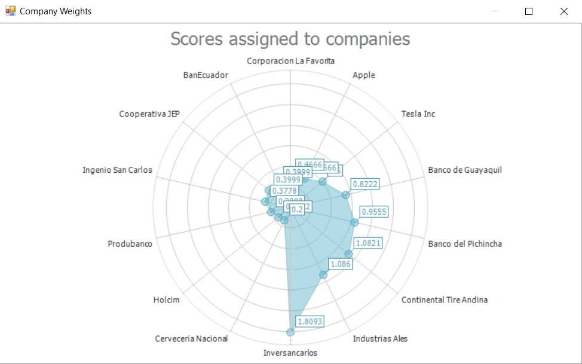
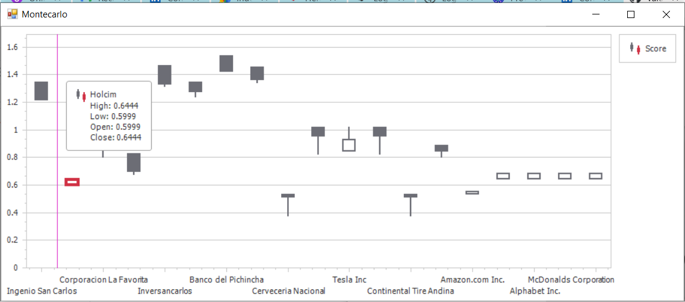
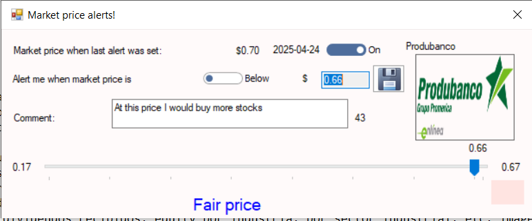

Main Interface
Overview of the main desktop software dashboard, providing access to all analytical modules and portfolio tools.

Stock Purchase Entry
Interface used to register stock acquisitions, including quantity, price, and transaction metadata.

Stock Sale Entry
Module for recording stock sales and updating portfolio positions in real time.

Dividends & Intrinsic Value Calculation
Displays dividend records and computes intrinsic value alongside additional financial indicators.

Intrinsic Value Trend Analysis
Historical visualization of intrinsic value evolution over multiple years.

Volatility Analysis
Comparison between intrinsic value volatility and annual average market price movements.

Correlation Analysis
Statistical correlation between intrinsic value and market price behavior.

Financial Structure Metrics
Visualization of debt vs equity, operating expenses, and available cash position.

Macroeconomic Health Index
Displays economic strength indicators of the country associated with the selected stock.

Dividend Distribution Radar
Radar chart representing dividend distribution across all portfolio stocks in a selected year.

Historical Dividend Performance
Company-level dividend distribution trends over time.

Portfolio Dividend Heatmap
Heatmap visualization of dividend flows across portfolio holdings and years.

Equity & Risk Analysis
Tracks equity evolution, risk exposure, dividends received, and industry-level breakdowns.

Stock Scoring Tree
Hierarchical evaluation of stocks based on 10 predefined investment conditions.

System Parameter Configuration
Advanced settings for customizing model parameters and evaluation logic.

Portfolio Activity Radar
Tracks owned, bought, and sold stocks across multiple years.

Cumulative Dividend Analysis
Total accumulated dividends received from all holdings over time.

Performance Simulation
Fast simulation comparing market price vs intrinsic value returns.

Ad-hoc Stock Evaluation
Manual evaluation tool for custom stock analysis.

Condition Weight Tree
Displays weighting distribution of the 10 evaluation criteria.

Company Score Radar
Radar visualization of final company evaluation scores.

Stock Score Cards
Summary cards showing evaluation results per stock.

Scenario Simulation Engine
Simulates changes in evaluation conditions to test sensitivity.

Monte Carlo Simulation
Probabilistic stock evaluation using randomized market scenarios.

Industry Classification (Porter Model)
Assigns sectors and industries using structured classification logic.

Sector Weight Tree
Visualization of influence and weighting across industries.

Multi-Year Intrinsic Evaluation
Color-coded scoring based on different intrinsic value time windows.

Technical Market Analysis
Advanced technical indicators applied to market price data.

Buy/Sell Alert System
Defines future price-based triggers for trading decisions.

Market Data Timestamp
Displays last recorded market price update time.

Sector Parameter Modeling
Configuration panel for sector-level modeling parameters.

Dividend vs Expense Analysis
Compares average daily dividends against operational expenses.

Compound Interest Analysis
Simulation of long-term compounding effects on portfolio growth.

Technical Support Interface
Contact module for technical assistance and user support.

Company Executive Profile
Information panel displaying CEO and executive leadership data.